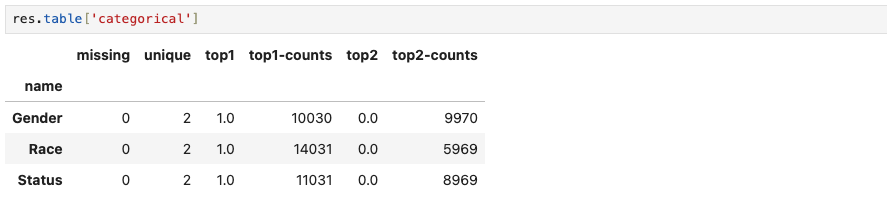
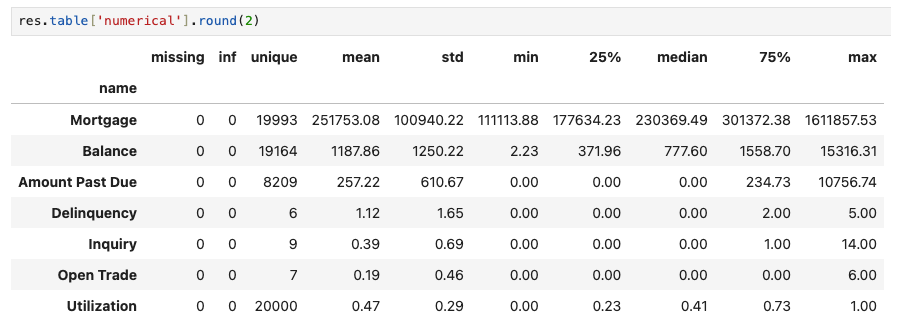

Basic Data Operations#
This section introduces some basic data operatios in Modeva, such as loading, summary, preprocessing and registration. All these operations are based on the DataSet class.
Data Loading#
Built-in Dataset#
There are four built-in datasets available in Modeva for demo purposes. The datasets are:
BikeSharing (Regression case)
CaliforniaHousing (Regression case),
SimuCredit (Classification case)
TaiwanCredit (Classification case)
One may use the DataSet.load function to a built-in dataset. For example,
## Create an instance of DataSet class
from modeva import DataSet
ds = DataSet()
ds.load("SimuCredit")
ds.data.head(5)
{kind=link}
External Dataset#
Modeva DataSet class supports load_csv, load_dataframe and load_spark functions to load external datasets. For example,
# Load external data
import pandas as pd
from sklearn.datasets import load_iris
from modeva import DataSet
iris = load_iris()
df = pd.DataFrame(data=iris.data, columns=iris.feature_names)
df['species'] = pd.Categorical.from_codes(iris.target, iris.target_names)
ds = DataSet(name="IrisData")
ds.load_dataframe(df)
Data Summary#
Run DataSet.summary to get a summary of a dataset, which includes the overall summary of the dataset, descriptive statistics of categorical variables and numerical variables.
The overall summary, return from res.table[“summary”], includes the number of samples, number of features with different types (numerical, categorical, and mixed), number of duplicated samples, number and percentage of missing and infinite values.
res = ds.summary()
res.table["summary"]
{kind=link}
Categorical Variables#
The summary statistics of categorical variables, return from res.table[“categorical”], includes the number of missing values, number of unique values, and the frequency of top 2 unique values, for each categorical variable.
{kind=link}
Numerical Variables#
The summary statistics of numerical variables, return from res.table[“numerical”], includes the number of missing and inf values, number of unique values, mean, standard deviation, minimum, 25th percentile, median, 75th percentile, and maximum value, for each numerical variable.
{kind=link}
Data Preprocessing#
Data preprocessing in Modeva enables cleaning and transforming raw datasets to ensure they are ready for model development. All preprocessing steps are executed using the DataSet class, with DataSet.reset_preprocess to initiate the preprocessing and DataSet.preprocess to execute the defined preprocessing steps.
ds.reset_preprocess()
ds.xxxxxx() # defined preprocessing steps
ds.preprocess()
Below is a list of key functionalities in Modeva for data preprocessing:
Handling Missing Values#
Run DataSet.impute_missing function to impute missing values in the dataset. The function supports imputing missing values of numerical, categorical, and mixed features with different methods: {mean, median, most_frequent, constant}. The function also supports adding an indicator for imputed values.
# Impute missing values of umerical features with `mean/median/constant` and add an indicator
ds.impute_missing(features=ds.feature_names_numerical,
method='mean', add_indicators=True)
# Impute missing values of categorical features with `most_frequent` and add an indicator
ds.impute_missing(features=ds.feature_names_categorical,
method='most_frequent', add_indicators=True)
# Impute missing and special values of mixed features and add an indicator.
ds.impute_missing(features=ds.feature_names_mixed,
method='median', add_indicators=True, special_values=["SV1", "SV2"])
Categorical Variable Encoding#
Run DataSet.encode_categorical function to encode categorical features. The function supports encoding categorical features using {one-hot, ordinal} methods.
ds.encode_categorical(features=("Gender", "Race"), method="onehot")
Numerical Variable Scaling#
Run DataSet.scale_numerical function to scale numerical features. The function supports scaling numerical features using {standardize, minmax, quantile, log1p, square} methods.
ds.scale_numerical(features=("Mortgage", "Balance"), method="log1p")
ds.scale_numerical(features=("Delinquency",), method="minmax")
ds.scale_numerical(features=("Inquiry",), method="quantile")
Numerical Variable Binning#
Run DataSet.bin_numerical function to bin numerical features. The function supports binning numerical features using {uniform, quantile, precompute} methods.
ds.bin_numerical(features=("Utilization",),
bins=10, method="uniform")
ds.bin_numerical(features=("Mortgage", "Balance","Amount Past Due"),
bins=10, method="quantile")
Data Preparation#
Data preparation involves configuring the dataset for modeling purpose. Modeva provides the following functionalities
DataSet.set_random_split to split the dataset into training and testing sets.
DataSet.set_target to set the target variable for modeling.
`DataSet.tset_task_type`_ to set the task type {Regression, Classification}
DataSet.set_sample_weight to set the column of sample weights.
DataSet.set_active_features to set (with overriding) active features that will be used for modeling.
DataSet.set_inactive_features to disable features that will not be used for modeling.
ds.set_random_split()
ds.set_target("Status")
ds.set_inactive_features(features=('Gender','Race'))
Data Registration#
Modeva supports registration of datasets, making it easier to manage and reuse them across multiple experiments. It leverages the open-source MLflow framework and provide the following functionalities:
DataSet.register to register a dataset into user’s MLflow database.
DataSet.list_registered_data to list all registered datasets in MLflow database.
DataSet.delete_registered_data to delete a registered dataset from MLflow database.
ds.register(name="A0-SimuCredit", override=True)
ds.list_registered_data()
{kind=link}